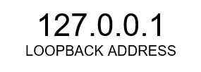

What is the World Wide Web?
- The World Wide Web also known as “WWW” is a collection of web resources and application which can access resources via the internet.
- Combination of all resources and users on the Internet that are using the Hypertext Transfer Protocol
The Birth of the World Wide Web
- The World Wide Web was invented at CERN by Tim Berners-Lee in the year 1989. It started when Tim noticed that they were having difficulties in sharing information. That’s why Tim developed the www for them to share information between scientists in universities and institutes around the world. He also suggested that you could actually link the text in the files themselves.
- Instead of reading one research paper at a time, you could just display part of another paper that holds directly relevant text. The documentations of a specific mathematical nature would be represented as a ‘web’ of information which is held in electronic form on computers across the world. Tim thought that is could be done by using a hypertext, linking documents together by using buttons on the screen, where you can just simply click on to jump from one paper to another.
THE INTERNET (INTERNETWORK)
- Interconnected computer network on a global scale, that shares information and resources.
- Hosts and Media, Protocols.
- Global Network of Networks.


Domain Name System (DNS)
- The Domain name system (DNS) is a database of network and IP Addresses. translates Internet domain and host names to ip addresses and vice versa.
Web Debugging Proxy
- Intercepts Web Communication and shows how it looks like.
- Has been in use by the World Wide Web since the 90’s.
- Application level protocol for distributed hypermedia information systems.
- It is generic protocol which can be used for many tasks other than its use for hypertext.
- It is a language for describing the structure of Web pages.
HyperMedia
- The HyperMedia is a term used for hypertext which contains graphic videos and sounds.